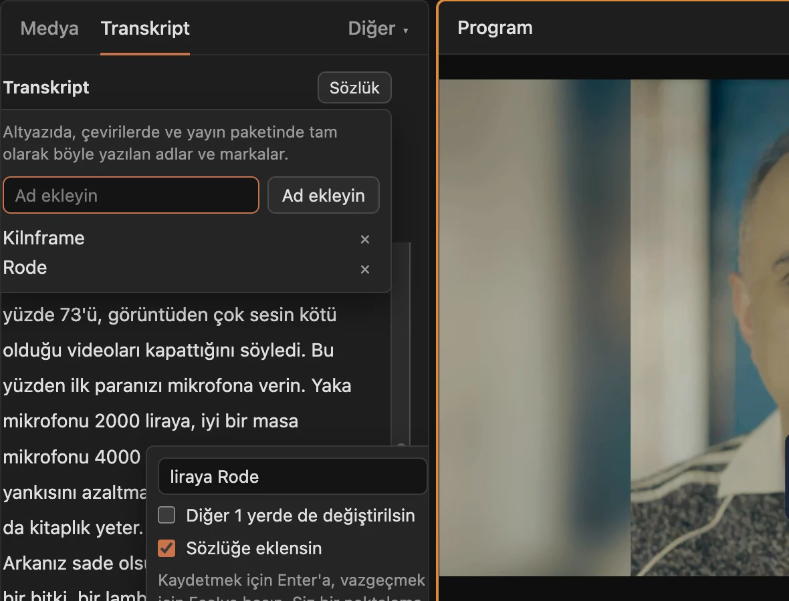
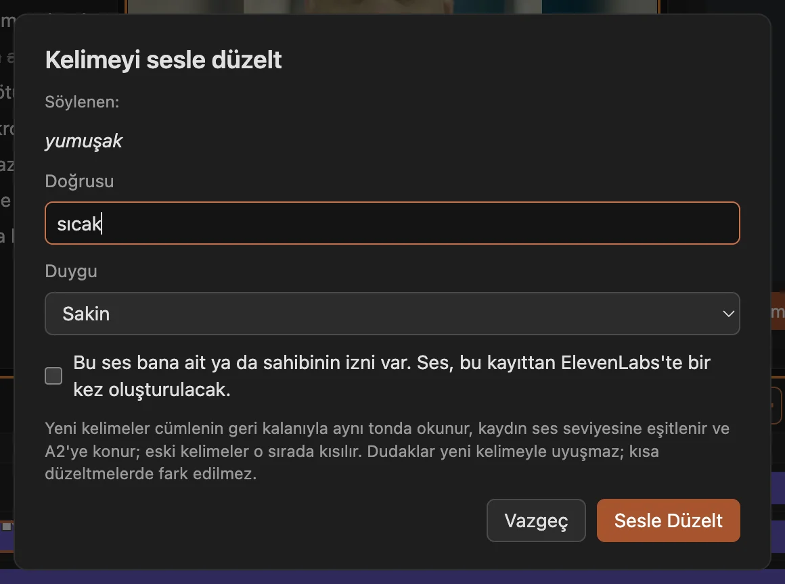

Kelimeleri düzeltmek ve sesle düzeltmek
İki ayrı düzeltme var: Kelimeleri Düzelt…, transkript seni yanlış duyduğunda yazıyı değiştirir; Sesle Düzelt…, sen yanlış söylediğinde sesi değiştirir.
Kelimeleri düzelt
- Kelimeleri seçTranskript'te kelimeyi ya da kelimeleri seç, sağ tıkla, Kelimeleri Düzelt…
- Doğrusunu yazEnter kaydeder, Esc vazgeçer. Aynı kelime başka yerlerde de geçiyorsa Diğer … yerde de değiştirilsin'i işaretle.
- Adı saklaSözlüğe eklensin'i işaretlersen bundan sonra altyazıda, çevirilerde ve yayın metinlerinde böyle yazılır.
Yazı değişir, ses olduğu gibi kalır. Düzeltilen kelime ne duyulduğunu gösterir (Duyulan: …); Duyulan Kelimeleri Geri Getir geri alır.

Sözlük
Transkript sekmesinin üstündeki Sözlük, adları ve markaları altyazı, çeviri ve yayın paketi için tam yazdığın gibi tutar. Ad ekleyin ile elle eklersin. Bulutta transkriptte adlar hizmete de gider, doğru duyulsunlar diye.
Kendi sesinle yeniden söyle
Bir kelimeyi yanlış söylediysen onu seç ve Sesle Düzelt…'i seç.
- Söylenen: ne söylediğini gösterir; Doğrusu'nu yaz.
- Duygu: Otomatik (cümleden) ya da heyecanlı, sakin, ciddi, neşeli, vurgulu, fısıltı.
- Sesin sana ait olduğunu ya da sahibinin izni olduğunu işaretle ve Sesle Düzelt'e bas.
Yeni kelimeler çevresindeki cümlenin tonunda okunur, kaydın ses seviyesine getirilir ve A2'ye konur; eski kelimeler o sırada susar. Dudaklar uymaz; kısa bir düzeltmede kimse fark etmez.

Bunun için ses klonlamaya izin veren ücretli bir planda ElevenLabs API anahtarı gerekir. ElevenLabs hesabında her kayıt için bir kez bir ses yapılır. Ayarlar › Yapay zeka › Fazla Sesleri Bul, aynı kayıt için birden fazla kez yapılmış sesleri silmen için listeler.